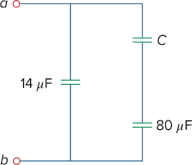
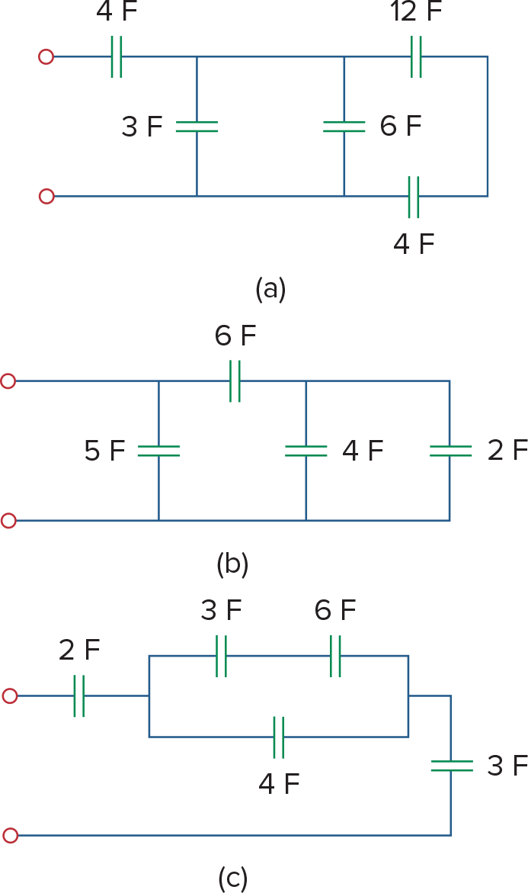
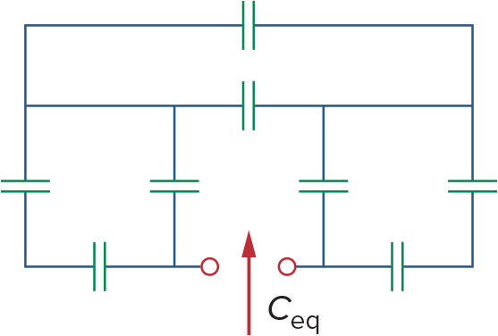
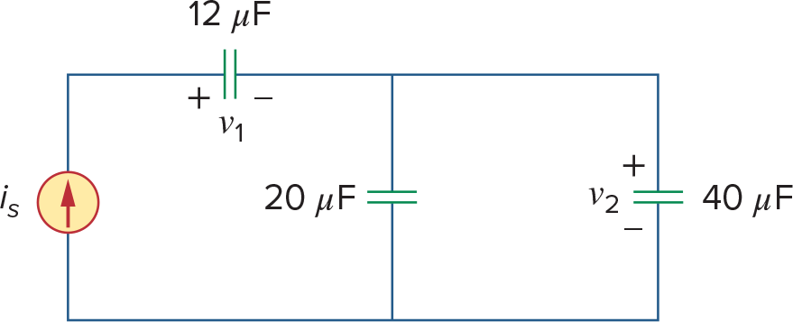
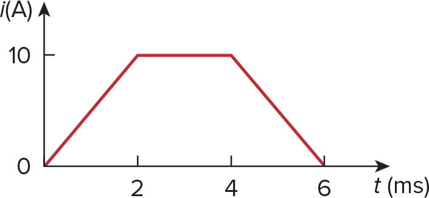
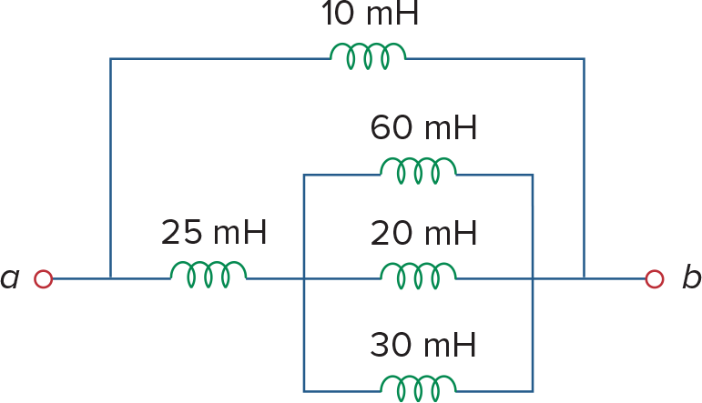
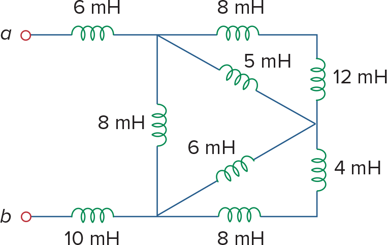
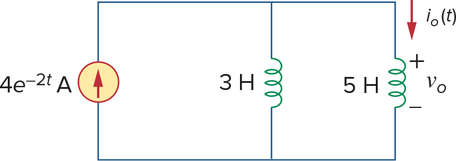

ECET 250E / WORKED WALKTHROUGH
Problem Set 5 · Capacitors and inductors
Trace the connections first. Then choose the capacitor or inductor rule, substitute the values, and check the result.
Due October 13, 2026, 1:30 p.m. (checked in D2L October 7).
Ideal capacitors and uncoupled ideal inductors are assumed. Capacitors add in parallel; inductors add in series. A series junction must have no other branch. Keep the indicated voltage and current directions.
PROBLEM 6.16
Find the unknown capacitor
Given / find: The equivalent at a–b is 30 µF. A 14 µF branch is in parallel with C in series with 80 µF.

Why this method: Separate the parallel branches before solving the unknown series pair.
Remove the known parallel branch
Parallel capacitances add. The C–80 µF branch must supply the difference.
Write the series relation
Use reciprocal addition, or the product-over-sum form for two capacitors. Keep all capacitances in µF.
Solve for C
Multiply by the denominator, collect the C terms, then divide.
C = 20 µF.
Check your reasoning: 20 × 80/(20 + 80) = 16 µF; adding the 14 µF branch gives 30 µF.
Common mistake: Adding C and 80 directly. They are in series, so their equivalent is smaller than either one.
Back to problem listPROBLEM 6.17
Three capacitor networks
Given / find: Find the equivalent capacitance in Fig. 6.51(a), (b), and (c). All labels in these three diagrams are in F.

Why this method: Reduce the innermost simple pairs, then redraw the remaining connections.
(a) Start at the right-hand branch
The 12 F and lower 4 F meet at an isolated right-hand node, so they are in series.
(a) Combine across the middle nodes
That 3 F equivalent is parallel with the central 3 F and 6 F. The result is in series with the input 4 F.
(b) Work from right to left
The right-hand 4 F and 2 F are parallel: 6 F. This is in series with the top 6 F, giving 3 F. The left 5 F is parallel with that whole branch.
(c) Reduce the rectangle
The top 3 F and 6 F are series: 2 F. Add the lower 4 F in parallel to get 6 F. The remaining 2 F, 6 F and right-hand 3 F are in series.
(a) 3 F; (b) 8 F; (c) 1 F.
Check your reasoning: The series result in (a) is below 4 F; (b) exceeds its direct 5 F branch; (c) is below its smallest series member, 2 F.
Common mistake: Assuming nearby components are parallel. They must share both endpoints.
Back to problem listPROBLEM 6.18
Identical-capacitor network
Given / find: Every capacitor in Fig. 6.52 is 4 µF. Find the equivalent between the two bottom terminals.

Why this method: Name the upper-left and upper-right nodes. The outer branches on each side reduce separately, leaving three equivalents in series.
Reduce the left side
The outer vertical 4 µF and bottom-left 4 µF form a series path from the left terminal to the upper-left node. Their 2 µF equivalent is parallel with the inner vertical 4 µF.
Reduce the right side
The right side has the same connections, so its equivalent is also 6 µF.
Reduce the top connection
The topmost and middle horizontal capacitors connect the same upper-left and upper-right nodes. They are parallel.
Combine the remaining chain
The reduced path between the bottom terminals is 6 µF, then 8 µF, then 6 µF in series.
Ceq = 24/11 µF ≈ 2.18 µF.
Check your reasoning: The result is smaller than each of the three series equivalents. Trace the path between the two open bottom terminals.
Common mistake: Treating the two bottom terminals as connected by a wire; they are the measurement port, not a short circuit.
Back to problem listPROBLEM 6.26
Charge and energy in parallel
Given / find: 5 µF, 10 µF, and 20 µF capacitors are connected in parallel across 150 V. Find total capacitance, each charge, and total energy.
Why this method: Parallel branches all have the same 150 V. Use q = CV for each branch and W = ½CV² for energy.
Add capacitances
For parallel capacitors, add their values.
Calculate each charge
Multiply each capacitance by the common voltage. Using µF × V gives µC.
Calculate total stored energy
Use the total capacitance in farads, and square the voltage.
Ceq = 35 µF; charges = 750, 1500, 3000 µC; total energy ≈ 0.394 J.
Check your reasoning: Total charge = 5250 µC = Ceq × 150 V. Individual energies 0.05625, 0.1125, and 0.225 J add to 0.39375 J.
Common mistake: Dividing the 150 V between parallel branches. Each receives the full source voltage.
Back to problem listPROBLEM 6.32
Capacitor voltages from a current source
Given / find: is = 50e⁻²ᵗ mA, v₁(0) = 50 V, v₂(0) = 20 V. The source drives 12 µF in series with parallel 20 µF and 40 µF. Find v₁(t), v₂(t), and energy in every capacitor at 0.5 s.

Why this method: Current entering a capacitor’s positive terminal increases its voltage. Integrate current to get added charge; divide that charge by the appropriate capacitance.
Identify the shared current and voltage
The 12 µF carries all source current. The 20 µF and 40 µF are parallel, so both have v₂ and behave as 60 µF for finding v₂. The indicated current enters the positive side of v₁.
Integrate the source current from 0 to t
Convert 50 mA to 0.050 A. The integral is charge in coulombs.
Add the initial voltages
Apply v(t) = v(0) + Δq/C separately to the 12 µF capacitor and the 60 µF parallel equivalent.
Write the shared parallel voltage
This is the voltage of both the 20 µF and the 40 µF capacitor.
Evaluate at half a second
Use e⁻¹ = 0.367879. The voltages are v₁ = 1366.918 V and v₂ = 283.384 V.
Find energy in each physical capacitor
Use its own capacitance. The 60 µF equivalent is useful for voltage but the question asks for energy in each capacitor.
v₁(t) = 50 + 2083.333(1 − e⁻²ᵗ) V; v₂(t) = 20 + 416.667(1 − e⁻²ᵗ) V. At 0.5 s: W12 = 11.21 J, W20 = 0.8031 J, W40 = 1.606 J.
Check your reasoning: At t = 0 both formulas recover the given voltages. The 40 µF stores twice the energy of the 20 µF because they share the same voltage. The large voltages follow from the ideal mA source charging µF capacitors.
Common mistake: Dropping the initial voltage, using 50 A instead of 0.050 A, or dividing the full source current by each parallel capacitance separately.
Back to problem listPROBLEM 6.40
Voltage from a current graph
Given / find: A 5 mH inductor has a current ramp 0 to 10 A over 0–2 ms, constant 10 A over 2–4 ms, and a ramp back to zero over 4–6 ms. Find voltage at 1, 3, and 5 ms.

Why this method: Inductor voltage depends on slope, not current magnitude. Use the passive convention: current enters the positive-voltage terminal.
Use the slope of each straight segment
The relation is v = L di/dt. Convert L to 0.005 H and each 2 ms interval to 0.002 s.
At 1 ms: rising ramp
The slope is (10 − 0)/0.002 = 5000 A/s.
At 3 ms: flat segment
The current is nonzero but unchanging, so di/dt is zero.
At 5 ms: falling ramp
The slope is (0 − 10)/0.002 = −5000 A/s.
+25 V, 0 V, −25 V at 1, 3, 5 ms respectively.
Check your reasoning: Positive voltage increases current; negative voltage decreases it. The requested times are away from the graph’s corners.
Common mistake: Using 5 A/ms directly with henries. Convert to 5000 A/s first.
Back to problem listPROBLEM 6.43
Energy stored in an inductor
Given / find: An 80 mH inductor’s current rises from zero to 60 mA. Find its final stored energy.
Why this method: Inductor energy depends on the final current squared, regardless of how quickly it got there.
Convert the units
80 mH = 0.080 H; 60 mA = 0.060 A.
Square the current and multiply
Use W = ½LI².
W = 0.144 mJ = 144 µJ.
Check your reasoning: The energy is nonnegative. At steady current an ideal inductor has zero voltage but can still store energy.
Common mistake: Concluding that steady state means zero energy, or forgetting that the current is squared.
Back to problem listPROBLEM 6.51
Reduce an inductor network
Given / find: Find Leq at a–b in Fig. 6.73: a 10 mH top branch in parallel with 25 mH in series with a parallel 60, 20, 30 mH group.

Why this method: For uncoupled inductors, the series/parallel rules match resistors: series values add; parallel reciprocals add.
Reduce the right-hand parallel group
The 60, 20, and 30 mH inductors share both endpoints.
Add the series 25 mH
The lower path now has 25 mH + 10 mH.
Combine the two a–b branches
The top 10 mH is parallel with the entire 35 mH lower path.
Leq ≈ 7.78 mH.
Check your reasoning: A parallel equivalent must be smaller than its smallest branch, here 10 mH.
Common mistake: Putting the top 10 mH in series with 25 mH; a branch junction lies between them.
Back to problem listPROBLEM 6.53
Reduce a network with diagonal branches
Given / find: Find Leq for Fig. 6.75. Name the internal top-left node U, bottom-left node D, and right-middle node M.

Why this method: Diagonal drawing lines do not require a special transform here. The right-hand outside pairs each have an isolated intermediate node.
Reduce U to M
The upper 8 mH and right-side 12 mH are series: 20 mH. This path is parallel with the 5 mH diagonal.
Reduce D to M
The lower 8 mH and right-side 4 mH are series: 12 mH. This is parallel with the 6 mH diagonal.
Reduce U to D
The route through M has 4 + 4 = 8 mH. It is parallel with the left internal 8 mH.
Add the terminal inductors
The 6 mH at terminal a and 10 mH at terminal b are in series with the reduced internal network.
Leq = 20 mH.
Check your reasoning: The two terminal inductors alone contribute 16 mH. The internal network adds 4 mH. Here ∥ denotes parallel combination.
Common mistake: Treating the two diagonal inductors as series before reducing the outer paths: their shared node initially has additional branches.
Back to problem listPROBLEM 6.60
Current sharing between parallel inductors
Given / find: A source is(t) = 4e⁻²ᵗ A drives parallel 3 H and 5 H inductors. io points downward through 5 H, with io(0) = 2 A. vo is positive at the top. Find io(t) and vo(t) for t > 0.

Why this method: The two inductors share voltage. Use KCL on the derivatives to find that voltage, then integrate the 5 H branch current using its initial value.
Differentiate Kirchhoff’s current law
Take both branch currents downward. is = i₃ + io, and di₃/dt = vo/3, dio/dt = vo/5.
Find the common voltage
The equivalent is (1/3 + 1/5)⁻¹ = 15/8 H. Differentiate 4e⁻²ᵗ to get −8e⁻²ᵗ A/s.
Integrate the 5 H branch slope
Divide the common voltage by 5 H, then integrate from 0 to t and add io(0) = 2 A.
Check the other branch
KCL gives i₃ = 4e⁻²ᵗ − io = 2.5e⁻²ᵗ − 0.5 A. At long times the branches carry opposite 0.5 A currents even as the source current tends to zero.
io(t) = 0.5 + 1.5e⁻²ᵗ A; vo(t) = −15e⁻²ᵗ V.
Check your reasoning: io(0) = 2 A. Also 5 dio/dt = −15e⁻²ᵗ V. The remaining circulating current is allowed by the ideal lossless-inductor model.
Common mistake: Using an instantaneous current-divider formula and losing the initial conditions. That shortcut omits the constant 0.5 A term.
Back to problem list